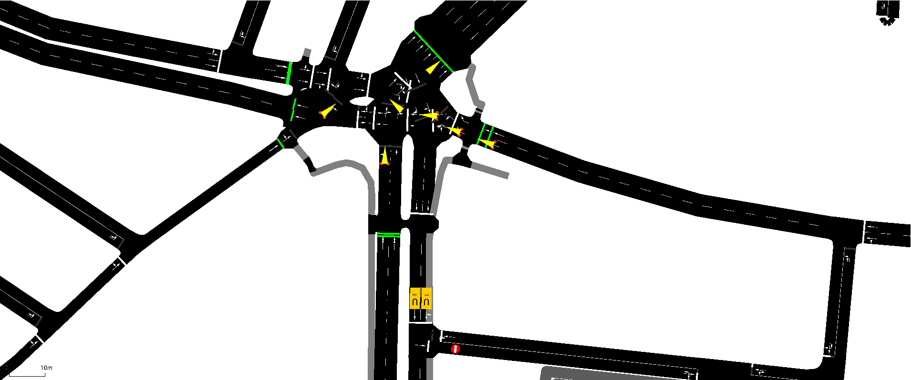
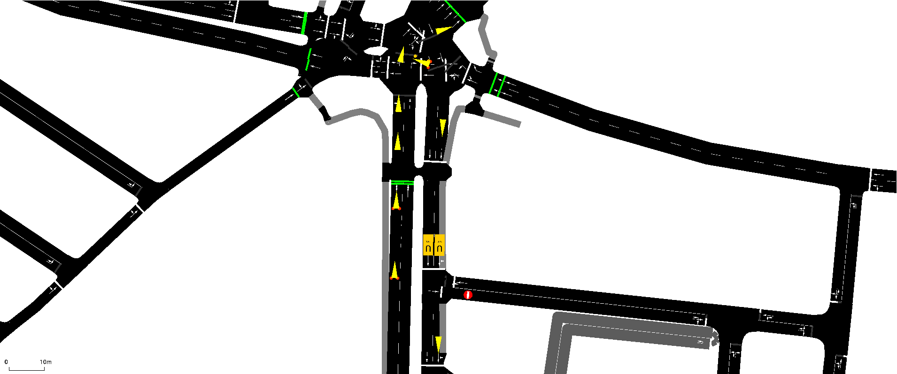

1. Project Overview & Technical Goal
This MVP presents a self-correcting traffic management system using the SUMO simulator coupled with a real-time Python controller (TraCI). The goal is to move beyond static rerouting (which just shifts jams) and implement a dynamic system that spreads traffic across multiple secondary routes based on live congestion intensity.
Technical Achievement: Establishing a reliable TraCI loop to enable real-time decision-making based on vehicle density.
2. The Two-Layer Diversion Mechanism
Layer 1: Static Incident (XML)
The initial road closure is set by a time-dependent XML rerouter device, forcing all vehicles off the main route at time t=100s.
<interval begin="100" end="3600">
<closingReroute id="E_Blocked_ID"/> // Road is physically closed.
</interval>
</rerouter>
Layer 2: Dynamic Management (Python/TraCI)
The Python script monitors the main detour road and intervenes to prevent its collapse.
if current_density > THRESHOLD:
traci.edge.setAdaptedTraveltime(DETOUR_EDGE, 5000.0) // Apply cost penalty
traci.vehicle.rerouteTravelTime(veh_id) // Force check
3. Simulation Showcase: Congestion & Relief
Phase A: Static Rerouting Fails (Congestion Transfer)
The barricade is active, forcing all traffic onto the single primary detour route. The system detects the resulting vehicle density spike.
Phase B: The System Intervenes
The Python controller detects the congestion threshold has been exceeded. It applies the high travel-time penalty, and the console confirms the intervention.
TIME: 630s | Edge clear (12 cars). Cost reverted.
TIME: 660s | CONGESTED: E_Detour_Main (16 cars). PENALTY APPLIED.
Phase C: Successful Traffic Spreading
New vehicles are successfully diverted to a secondary (clearer) route, resulting in better network efficiency and reduced jamming compared to static rerouting.
